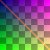
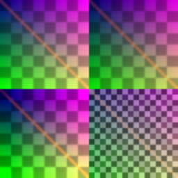
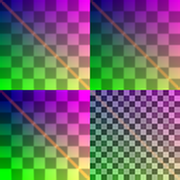

SRCNN Image Upscaler
A complete Vyne project — synthetic dataset, residual SRCNN training, CUDA inference, and image-quality benchmarks.
examples/projects/srcnn is a full project built on the language, not a toy snippet. It generates its own training pair, trains a 3-layer residual SRCNN, runs the entire inference graph inside one @device<cuda> frame, compares against a bilinear baseline and an FSR-1-style baseline, and reports PSNR, SSIM, edge energy, and a ringing proxy.

Results
Generated 128×128 LR → 256×256 HR pair, trained on the same pair. This is a single-image demonstration of the pipeline, not a generalization claim.
| Method | PSNR (dB) | SSIM | Edge energy | Ringing proxy |
|---|---|---|---|---|
| Bilinear | 29.8139 | 0.985724 | 0.0345062 | 0.0453306 |
| FSR-1-style (Lanczos3 + RCAS-like) | 31.5510 | 0.990767 | 0.0494989 | 0.0423732 |
| Vyne SRCNN | 33.5100 | 0.994912 | 0.0466214 | 0.0365586 |
Higher PSNR/SSIM and higher edge energy are better; lower ringing is better. Vyne SR wins PSNR (+1.96 dB over the FSR-style baseline), SSIM, and ringing, while keeping edge energy well above bilinear.
The FSR baseline is a faithful style implementation of FSR 1.0, not a bit-exact AMD EASU/RCAS port: EASU is approximated by Lanczos-3 resampling, and RCAS is a simplified local-min/max-clamped adaptive sharpen.


Architecture
The final layer starts at zero, so the initial model output is exactly bilinear. Training can only learn a correction, which keeps the optimization stable and guarantees the network starts from a sensible baseline.
The shipped trainer uses L2 loss for stable PSNR convergence. Pure L1 was implemented and evaluated but stalled on this small scratch model; the README records that honestly instead of claiming an L1 win.
Project layout
| Path | Contents |
|---|---|
src/dataset.vy | Builds a 256×256 synthetic HR montage, LR, and bilinear input; writes data/train_*.png. |
src/model.vy | Residual SRCNN forward, backward, weight save/load, custom adjoint. |
src/train.vy | Adam training loop and checkpoint save. |
src/main.vy | Inference, output PNGs, benchmark metrics. |
src/metrics.vy | PSNR, global SSIM, edge energy, ringing proxy. |
src/upscale.vy | Lanczos-3 and RCAS-style FSR baseline. |
src/gpu.vy | Full SRCNN inference inside one @device<cuda> frame. |
data/ | Template assets plus generated train/val pairs and srcnn_x2.vwt. |
scripts/run.ps1 / scripts/run.sh | Dataset → train → benchmark. |
Run it
From examples/projects/srcnn:
Or step by step:
Or use the project-aware driver:
Outputs:
build/output_bilinear.pngbuild/output_fsr1.pngbuild/output_vyne_sr.pngdata/srcnn_x2.vwt(trained weights)
GPU inference
src/gpu.vy runs all three convolutions, both ReLUs, the residual add, and the final download inside one @device<cuda> frame. The device backend has a device_conv2d kernel (Float32 default, Float64 opt-in) alongside matmul and the elementwise kernels. If CUDA is unavailable, the same calls fall back to the CPU backend and the output is unchanged.
The inference path is fully GPU-capable. Training is CPU-side because device backward kernels are not implemented yet.
Training and the custom adjoint
vconv has explicit CPU backward kernels:
conv2d_backward_inputconv2d_backward_weightconv2d_backward_biasrelu_backward
The compiler's general tensor AD is still scalar/array-reduction only, so the project registers a custom adjoint by convention:
sr_lossis marked@differentiable.sr_loss_vjp(the<fn>_vjpconvention) is the reverse pass. It callsloss_and_gradsand publishes the weight gradients throughlast_grads().train.vywrites@backward region step { loss := sr_loss(...); backward(loss); ... }. The optimizer steps run inside the region because the gradient buffers are arena-scoped.
This removes the explicit backprop loop from the training script. Full automatic differentiation of vconv.conv2d calls is still the next AD step; the custom adjoint is the bridge.
Benchmark report
vynec bench produces a machine-readable report:
See build/bench.json for the current numbers.
Limits and honest caveats
- Single-image demo. The trainer and benchmark use the same generated pair. Train on more pairs before claiming real-world SR quality.
- The template
data/reference.pngis itself a bilinear upscale ofdata/sample.png, so bilinear scores about 60 dB on that pair. The benchmark uses the generated synthetic HR/LR pair instead. - FSR baseline is a style implementation, not bit-exact AMD FSR 1.0.
- GPU conv training is not implemented. Inference is fully on-device; training uses CPU backward kernels because compiler conv VJPs are not landed.
- Conv VJP is a custom adjoint, not automatic tensor AD.
sr_loss_vjpuses thevconvbackward kernels; automatic conv VJPs remain a follow-up. - The bundled
data/espcn_x2.vwyis the template's passthrough model and is not used by the SRCNN path.
What this project demonstrates
- Project scaffolding and a real
project.toml. - Dataset generation with
vimageandvfs. - Layer construction and forward passes with
vconvandvlin/vml. - Region-scoped training state and Adam with
voptim. @differentiable+@backward+ custom VJP.- Full GPU inference with
@device<cuda>anddevice_conv2d. - Image quality metrics with
vstat(psnr,ssim). - Benchmark reporting with
vynec bench.